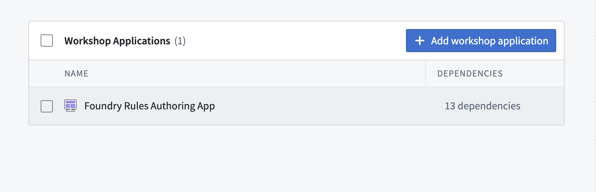
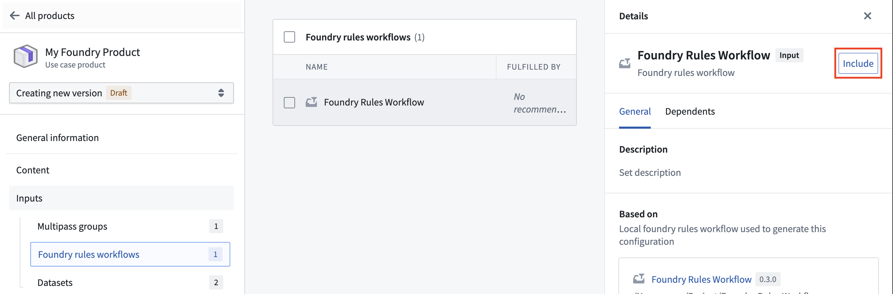
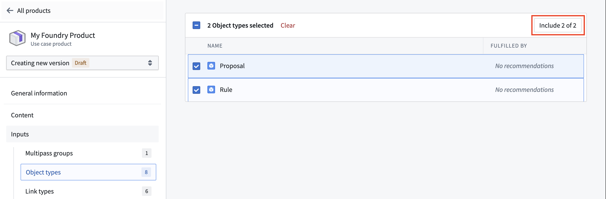
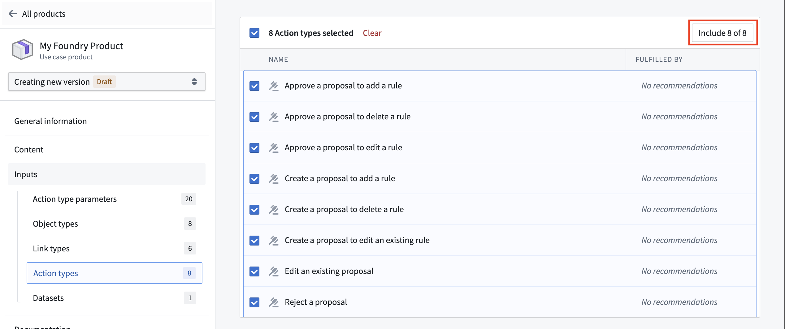

Use Foundry DevOps to include your Foundry Rules workflow in Marketplace products and enable other users to install and reuse them. Learn how to create your first product.
All Foundry Rules features are supported, with the exception of the authored rules themselves. Because objects cannot be packaged with Marketplace, the Rule and Proposal objects and the rule logic they contain are not included in a product.
To add a Foundry Rules workflow to a product, first create a product then select the Workshop Application content type, followed by your Foundry Rules authoring application, as below.

After adding your Workshop application, go to the Foundry rules workflows section in your product's inputs and include your workflow.

Once your workflow has been included, additional object type and action types will be included as inputs to your product. You will likely want to include both the Rule and Proposal object types, along with all of the generated action types to your product.


:::callout{theme="neutral"}
When setting your product's installation mode to Production, be sure to enable Only allow edits via actions for the Rule and Proposal object types in the Datasources tab of the Ontology Manager application. Without this step, users will encounter an Actions:PermissionDenied error when attempting to create a proposal.
:::